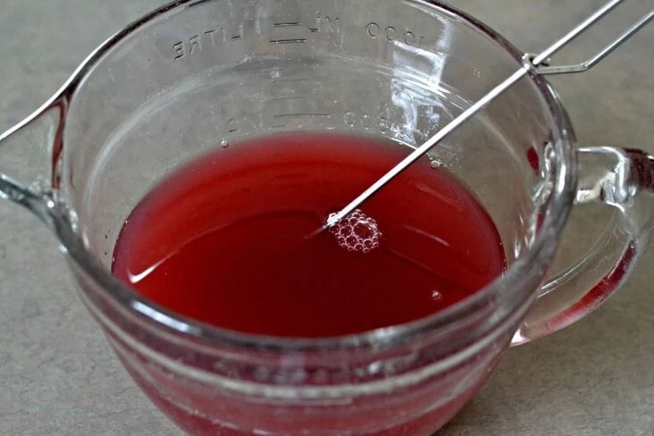

Informações Iniciais
Localidade:Em muitos locais das Backrooms,
ou misturando água de amêndoa e sangue de Skin-Stealer;
Propriedades: Mortal, causa imensa dor e agonia ao usuário;
Utilização: É possível carregar em garrafas;
É possível utilizar contra entidades e andarilhos;
Pode ser colocada em uma Squirt Gun, sem causar corrosão ao objeto.

Dor Líquida
A dor líquida é um objeto encontrado em diversos níveis das Backrooms.
Existem, ao todo, sete efeitos causados pela dor líquida:
- Primeiro efeito: Febre leve ou um leve inchaço na perna esquerda;
- Segundo efeito: Dor forte, aguda e lancinante no estômago;
- Terceiro efeito: Leve dor de cabeça que durará aproximadamente 10 horas;
- Quarto efeito: Pequena quantidade de pus vazando das pernas e da cabeça;
- Quinto efeito: Pequenas fraturas no crânio;
- Sexto efeito: Sangramento interno das pernas, rompimento dos músculos e quebra aleatório dos ossos do pé;
- Sétimo efeito: Explosão do estômago e dos globos oculares e vazamento dos órgãos internos.
É possível ser curado até o 4° efeito, após isso, é quase impossível.
Após o sétimo efeito, o indivíduo morrerá dentro de um ano.
Links
Wikifandom (em português)
Wikifandom (em inglês)